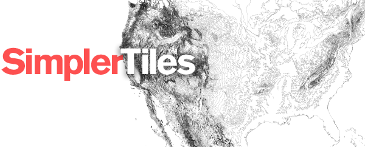

Simpler Tiles
is a library of ruby bindings for
Simple Tiles, a
GIS image generation library. It allows you to generate PNG based map
images without having to dip into straight C and easily connects with
ActiveRecord. It can display any vector data that
OGR can read.
The source is at Github.
You can install the gem with:
$ gem install simpler-tiles
The api docs are here, and if you have
comments or questions head on over to #newsapps or #propublica
on Freenode, or post them in the github issue
tracker.
Dependencies
Simpler Tiles depends on Simple Tiles, OGR, Cairo and Pango. You can find
installation instructions for these libraries in the
Simple Tiles
documentation.
Overview
Simpler Tiles contains a hierarchy of objects:
As an example of how this fits together, here is a script that generates
the Simpler Tiles logo (full repository
here):
require 'rubygems'
require 'simpler_tiles'
ROOT = File.expand_path(File.dirname(__FILE__))
map = SimplerTiles::Map.new do |m|
m.srs = "EPSG:3083"
m.bgcolor = "#ffffff"
m.width = 423
m.height = 260
m.set_bounds(-585080.885134, 6849466.721081, 4161303.603672, 9587780.816356)
Dir["#{ROOT}/data/*.shp"].each do |shp|
m.layer shp do |l|
l.query "select * from '#{File.basename shp, '.shp'}'" do |q|
q.styles "stroke" => "#111111",
"line-join" => "round",
"weight" => "0.1"
end
end
end
end
File.open("#{ROOT}/out.png", 'w') {|f| f.write map.to_png }
A Basic Tile Server
Simpler Tiles was designed to make slippy maps. The following is a basic tile
server using Sinatra. It will open display any shapefile on your hard drive
by visiting a url like: http://localhost:4567/shape/path/to/shapefile.shp
require 'rubygems'
require 'sinatra'
require 'simpler_tiles'
# Grab the user's home directory
ROOT = File.expand_path("~")
# Set up a route that will grab the path to a shapefile and render the
# index template below.
get '/shape/*' do
erb :index
end
# Set up the tile url to capture x, y, z coordinates for slippy tile generation
get '/tiles/*/:x/:y/:z.png' do
# Let the browser know we are sending a png
content_type 'image/png'
# Create a Map object
map = SimplerTiles::Map.new do |m|
# Set the background color to black
m.bgcolor = "#000000"
# Set the slippy map parameters from the url
m.slippy params[:x].to_i, params[:y].to_i, params[:z].to_i
# Add a layer based on the parameters in the URL
m.layer File.join(ROOT, params[:splat].first) do |l|
# Grab all of the data from the shapefile
l.query "select * from '#{File.basename(params[:splat].first, '.shp')}'" do |q|
# Add a style for stroke, fill, weight and set the line-join to be round
q.styles 'stroke' => '#002240',
'weight' => '1',
'line-join' => 'round',
'fill' => '#ffffff'
end
end
end
# Finally, render the map and ship it off
map.to_png
end
# A simple inline template for the map
__END__
@@index
<!doctype html>
<html>
<head>
<script src="http://leaflet.cloudmade.com/dist/leaflet.js"></script>
<link rel="stylesheet" href="http://leaflet.cloudmade.com/dist/leaflet.css">
<style>
body, html {
margin: 0;
padding: 0;
background-color: #000000;
width: 100%;
height: 100%;
}
#map {
width: 100%;
height: 100%;
}
</style>
</head>
<body>
<div id="map"></div>
<script>
var map = new L.Map('map');
var layer = new L.TileLayer('/tiles/<%= params[:splat] %>/{x}/{y}/{z}.png')
map.addLayer(layer).setView(new L.LatLng(38, -95), 1);
</script>
</body>
</html>
That's in no way a safe or secure thing to put on the internet, but it will
do as a simple replacement for QGIS!
Tips and Tricks
Deploying dynamically generated maps is difficult because of the data sizes and
processing required to render them. At ProPublica we have been following
these best practices:
-
If you are using a PostGIS backend make sure to limit your queries to
the bounds of the image. You will want to add a where clause to each
trip to the database like so:
layer.query Shape.where("the_geom && SRID=4326;#{map.buffered_bounds.reproject(map.srs, 'epsg:4326').to_wkt}'}").to_sql do |query|
# ...
end
-
If you are serving images as part of a tiled map, you'll also want to
put a proxy in front of your server with far future expiration date. At
ProPublica we're using cloudfront to serve this tile:

It will also speed up browser-side rendering if you have multiple domains
that proxy the tiles (eg. tiles-a.propublica.org, tiles-b.propublica.org, etc.)
-
Because of the extra time spent in collision detection for labels, you'll
probably want to limit the amount of labels you are displaying on a particular
tile.
-
If you are displaying labels (cf.
text-field and font styles)
you'll want to use a buffer -- usually a quarter to a half of a tile
(i.e. for a 256 tile set the buffer to be 64 to 128 pixels) -- so that
the layout isn't clipped at tile boundaries. You can assign a buffer on
SimplerTiles::Map objects like so:
-
Finally, for truly speedy maps, storing your spatial data in the Web Mercator
projection -- epsg:3785 -- will cut down on response time
because each geometry object won't need to be reprojected.
Change Log
- 0.2.0 — June 21st, 2014
- Added raster support. (thanks Al Shaw)
- 0.1.1 — February, 10th 2014
- Small fix for building on OSX.
- 0.1.1 — February, 10th 2014
- Small fix for building on OSX.
- 0.1.0 — February, 4th 2014
- Sync with upstream Simple Tiles changes.
- 0.0.9 — December, 2nd 2013
- Fix an issue with rb_raise
- 0.0.8 — April, 11th 2013
- Fix missing constant
- 0.0.7 — February, 27th 2013
- Fix deprecation warnings and compatibility with Simple Tiles 0.3.0, (thanks Adam Trilling)
- 0.0.6 — January, 30th 2013
- ar_layer now yields like layer
- 0.0.5 — January, 14th 2013
- Make the connection string for ar_layer more robust.
- 0.0.4 — December 8, 2012
- Fix connection string for ar_layer (thanks Adam Trilling)
- 0.0.3 — June 23, 2012
- Better search paths for cairo.
- 0.0.2 — April 10, 2012
- Removed initialization defaults from SimplerTiles::Map
- 0.0.1
- Initial release.
License
Copyright (c) 2012, ProPublica
Permission is hereby granted, free of charge, to any person obtaining a copy
of this software and associated documentation files (the "Software"), to deal
in the Software without restriction, including without limitation the rights
to use, copy, modify, merge, publish, distribute, sublicense, and/or sell
copies of the Software, and to permit persons to whom the Software is furnished
to do so, subject to the following conditions:
The above copyright notice and this permission notice shall be included in all
copies or substantial portions of the Software.
THE SOFTWARE IS PROVIDED "AS IS", WITHOUT WARRANTY OF ANY KIND, EXPRESS OR
IMPLIED, INCLUDING BUT NOT LIMITED TO THE WARRANTIES OF MERCHANTABILITY,
FITNESS FOR A PARTICULAR PURPOSE AND NONINFRINGEMENT. IN NO EVENT SHALL THE
AUTHORS OR COPYRIGHT HOLDERS BE LIABLE FOR ANY CLAIM, DAMAGES OR OTHER
LIABILITY, WHETHER IN AN ACTION OF CONTRACT, TORT OR OTHERWISE, ARISING
FROM, OUT OF OR IN CONNECTION WITH THE SOFTWARE OR THE USE OR OTHER DEALINGS
IN THE SOFTWARE.
Simpler Tiles is a project of ProPublica.